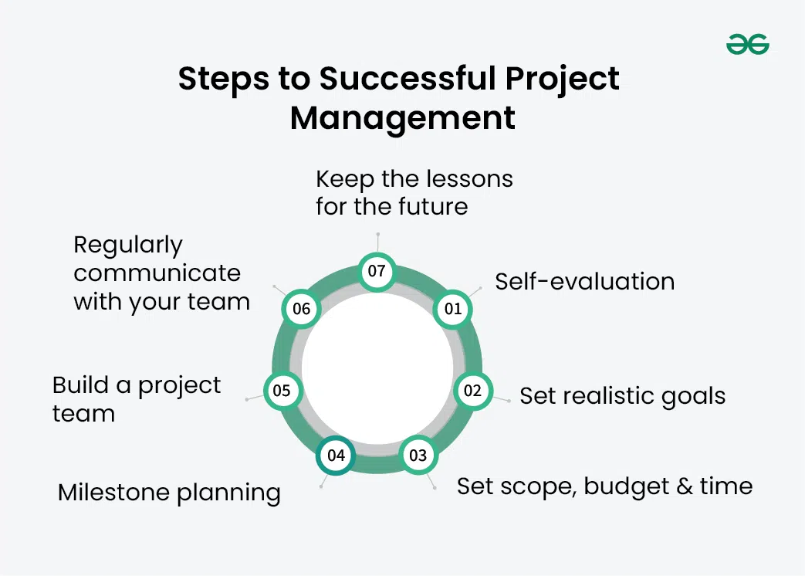

3.9 Project Monitoring & Control
Project monitoring and control is the ongoing process of measuring actual project performance against the baseline plan and taking corrective action when deviations occur. Monitoring answers the question "Where are we now?" while control answers "What must we do to get back on track?" Together they form the fourth process group in the project management lifecycle described in §3.2.
Because software is intangible, monitoring is harder than in manufacturing — yet it is even more essential. Without regular measurement, schedule slippage and cost overruns may remain hidden until they are too large to recover from.

Seven steps to successful project management
Effective monitoring and control are part of a broader discipline. The seven steps are:
- Self-evaluation: The manager assesses their own skills, available time, and capacity before taking on the project.
- Set realistic goals: Objectives should be specific, measurable, achievable, relevant, and time-bound (SMART).
- Set scope, budget, and time: The manager defines what is included and excluded, allocates the budget, and sets deadlines for key deliverables.
- Milestone planning: The project is broken into milestones so progress can be tracked and course corrections made early.
- Build the project team: The right people are assigned or hired based on the skills each task requires.
- Communicate regularly: Status meetings, progress updates, and open reporting keep the team and stakeholders aligned.
- Record lessons learned: After completion, the team documents what worked and what failed so future projects improve.
What is monitored
The project manager tracks performance across several dimensions throughout the SDLC:
- Schedule performance: Are milestones being met? Which tasks are behind? Is the critical path slipping (see §3.7 CPM)?
- Cost performance: Is actual expenditure within the approved budget? Are labour hours tracking against the estimate from COCOMO or decomposition?
- Scope performance: Is the team building what was agreed, or is scope creeping through unapproved changes?
- Quality performance: What is the defect rate? Are reviews and tests passing at each gate?
- Resource utilisation: Are team members over- or under-allocated? Are key skills available when needed?
- Risk status: Have identified risks materialised? Have mitigation actions been effective? Are new risks emerging?
Monitoring techniques
Common techniques used to gather and present monitoring data include:
- Status meetings and stand-ups: Regular short meetings where team members report progress, blockers, and plans for the next period.
- Milestone reviews: Formal checkpoints at the end of SDLC phases (SRS approved, design reviewed, test plan signed off) where deliverables are compared against entry/exit criteria.
- Earned Value Management (EVM): Compares planned value, earned value (work actually completed), and actual cost to compute schedule and cost variances.
- Gantt chart updates: The schedule chart is updated to show actual vs planned progress visually.
- Defect and metrics tracking: Trend charts of open defects, test coverage, and code churn indicate quality health.
- Progress reports: Written reports to stakeholders summarising accomplishments, variances, risks, and forecast completion date.
Corrective and preventive action
When monitoring reveals a deviation, the manager must decide on a response. Corrective action fixes an existing problem — for example, adding staff to a slipping task, descoping a low-priority feature, or extending the deadline with stakeholder approval. Preventive action addresses a potential future problem identified during risk monitoring — for example, cross-training a second developer before the only expert goes on leave.
Change control is tightly linked to monitoring: any change to scope, schedule, or resources must be formally evaluated for impact and approved before the team acts on it. Uncontrolled changes are one of the fastest routes to project failure.
Agile monitoring
In Agile projects, monitoring happens every sprint through sprint reviews, burndown charts, and velocity tracking. The team compares completed story points against the sprint commitment and adjusts the backlog for the next iteration. The principles are the same as in traditional monitoring — measure, compare, correct — but the cycle is much shorter.
Q: What is project monitoring and control? What dimensions are tracked and what corrective actions can a manager take?
Model answer points:
- Monitoring = measuring actual vs planned; control = corrective action to close gaps.
- Track schedule, cost, scope, quality, resources, and risk status.
- Techniques: status meetings, milestone reviews, EVM, Gantt updates, defect metrics, progress reports.
- Corrective action fixes current deviation; preventive action addresses future risk.
- Change control: formal approval before scope/schedule/resource changes.
- Explain difficulty of monitoring intangible software products.
- Agile equivalent: sprint reviews, burndown charts, velocity.